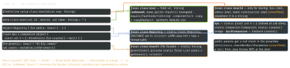

cross-platform · folio
In one line: The JVM knows nothing about Kotlin: no top-level functions, no properties, no
companions, no default arguments, no value classes, no suspend. kotlinc
lowers each feature to plain classes, static methods, synthetic bridges and runtime helper
calls (kotlin.jvm.internal.Intrinsics). Knowing the lowering explains Java-interop
annotations, boxing costs, $default frames in stack traces, and why a read-only
List can still change.
Download PDF Print view LaTeX source


Declarations → JVM
- Properties = private field +
getX()/setX()(isXstaysisX).@JvmFieldexposes the field;const val(primitive/String, top-level/object/companion) is a compile-time constant copied into callers — change it, recompile them. - Companion = nested class
Outer$Companion+ static field; its members are instance methods.@JvmStaticadds a real static inOuter, so Java writesApi.create(). - Default args: one body + synthetic
f$default(args…, int mask, Object); each bit ofmasksays “use the default”. Java sees only the full signature — add@JvmOverloadsfor telescoping overloads. - Lambdas:
invokedynamic+LambdaMetafactoryby default since 2.0 (smaller APKs; not serializable;-Xlambdas=classreverts). Capturedvars becomeRef.IntRef/ObjectRef. lateinit var: non-null field; the getter null-checks and throwsUninitializedPropertyAccessException;::x.isInitialized; no primitives. A nullablevarinstead makes every read?./!!.- No checked exceptions in Kotlin: without
@Throws(IOException::class)Java cannotcatch (IOException e)around the call — “never thrown in try”.
Example — Java-facing API
class Client @JvmOverloads constructor(
val url: String, val retries: Int = 3, val gzip: Boolean = true) {
companion object {
const val VERSION = 2 // Java: Client.VERSION (inlined)
@JvmField val TAG = "client" // Java: Client.TAG (static field)
@JvmStatic fun local() = Client("https://example.com")
fun plain() = 1 // Java: Client.Companion.plain()
}
@Throws(IOException::class) fun fetch(): ByteArray = TODO()
}
val a: Int? = 1000; val b: Int? = 1000
a == b // true -> equals()
a === b // false -> two Integer boxes (cache is -128..127)Control flow & collections
when (s)on sealed/is: aninstanceofchain; on JVM 21+ a singleinvokedynamicSwitchBootstraps.typeSwitch(experimental 2.2.20, default since 2.4.20). On an enum: synthetic$WhenMappingsordinal table +tableswitch(unverified).- Read-only ≠ immutable:
Listis a compile-time view ofjava.util.List;listOf(a, b)isArrays.asList-backed(unverified),mutableListOfanArrayList— a cast or Java code can mutate it.setOfiterates in insertion order. - Iterable ops are eager — every step builds a new list. Sequence is lazy, per element (map 1 → filter 1 → …), short-circuits (
first); pays off for long chains/big data, not 10 items orsorted().
Boxing
Int→int;Int?,List<Int>, genericT→Integer.IntArray=int[],Array<Int>=Integer[].===on boxes compares objects.
Compiler & targets
- K2 (stable, default since 2.0, May 2024): new frontend FIR feeds a shared IR backend → JVM bytecode, JS, Wasm, or LLVM (Native).
- Kotlin/Native: LLVM machine code, a tracing GC (new memory manager, default since 1.7.20, no
freeze); ARC only at the ObjC/Swift edge.
Traps
- “
Listis immutable” — only a read-only interface. foo$defaultin a trace = the default-args bridge.- Changed a library
const val: callers keep the old inlined value.
Remember: FileKt · INSTANCE · Outer$Companion · $default + mask · indy lambdas · List = java.util.List.